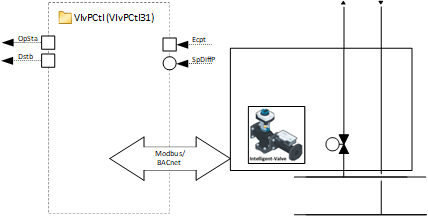
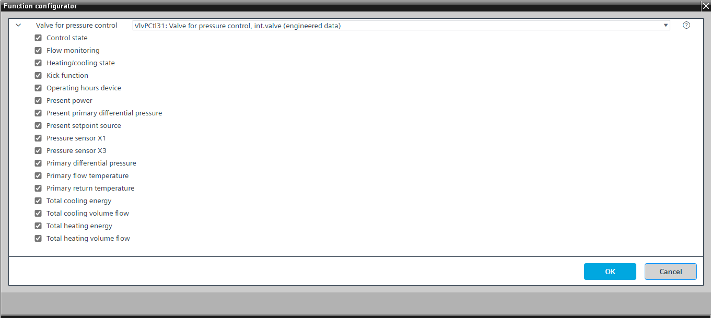

[VlvPCtl31] Valve for pressure control, Intelligent Valve
Program block, name / node subtype: [VlvPCtl31] Valve for pressure control, Intelligent Valve
Library hierarchy: Universal equipment
Family: VlvPCtl
Project tree | Diagram |
|---|---|
N/A |  |
Configurator


Program blocks are stored in the library without I/Os. Use the auto-create and auto-connect functions to create I/Os and/or to connect them to the interface blocks, e.g., R_A, CMD_B. Alternatively, take the I/Os from the folder containing the predefined I/Os in the library and/or from the plant and connect them to the interface blocks.
Function
Controls an intelligent valve that is integrated over BACnet or Modbus.
This program block contains optional elements that read various pieces of information from intelligent valve.
The following options are also available.
Option: Flow monitoring
Reads the present volume flow from the intelligent valve.
Generates an alarm if a signal for setpoint relative is above a specific value, e.g., 4 %, and there is no flow.
Option: Kick function
Prevents standstill damage by generating a pulse that opens the valve at a configured time with a defined pulse length after a minimum off time has elapsed.
This is configured in the program.
Mandatory elements
Name | Description | Type | Alarm / Notification class | Trend / Type | |
|---|---|---|---|---|---|
SpDiffP | Setpoint differential pressure | AO: Analog output | No | Yes, 3 | |
MnFlt | Main fault | MI: Multistate input | Yes, 6 | No | |
VlvPosFb | Valve position feedback | AI: Analog input | No | Yes, 1 | |
Optional elements
Name | Description | Type | Alarm / Notification class | Trend / Type | |
|---|---|---|---|---|---|
PrSpSrc | Present setpoint source | MI: Multistate input | Yes, 6 | No | |
TFlPrim | Primary flow temperature | AI: Analog input | No | Yes, 2 | |
TRtPrim | Primary return temperature | AI: Analog input | No | Yes, 2 | |
DiffPPrim | Primary differential pressure | AI: Analog input | No | Yes, 3 | |
PrDiffPPrim | Present primary differential pressure | AI: Analog input | No | Yes, 3 | |
PSenX1 | Pressure sensor X1 | AI: Analog input | No | No | |
PSenX3 | Pressure sensor X3 | AI: Analog input | No | No | |
PrPwr | Present power | AI: Analog input | No | Yes, 2 | |
OphDev | Operating hours device | AI: Analog input | No | No | |
CtlSta | Control state | MI: Multistate input | No | No | |
TotHVfl | Total heating volume flow | AI: Analog input | No | No | |
TotHEngy | Total heating energy | AI: Analog input | No | No | |
TotCVfl | Total cooling volume flow | AI: Analog input | No | No | |
TotCEngy | Total cooling energy | AI: Analog input | No | No | |
HCSta | Heating/cooling state | MI: Multistate input | No | No | |
Additional options
Description |
|---|
|
Flow monitoring Elements that belong to this element: PrVfl | Flow monitoring | AI: Analog input | Alarm: No | Trend: No FlMon | Flow monitoring | BCalcVal: Binary calculated value | Alarm: Yes | Notification class 4 |
Further options
Description |
|---|
Kick function |